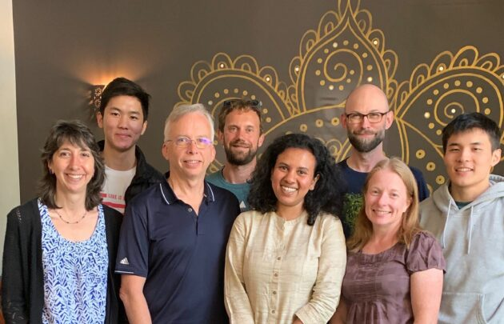

<section class="bg-primary" id="about">
    <div class="container">
        <div class="row">
            <div class="col-lg-8 col-lg-offset-2 text-center">
                <h2 class="section-heading">Year 2</h2>
                <hr class="light">
                
                <p>Although I started to warm up more to CS in my sophomore year—courses became more engaging, and I met a good group of friends—that warmth didn’t extend too far outside the classroom. CS was still missing the fulfillment of “solving real life problems” that I felt from working with Hope Place or ASUW.</p>
                <p>The turning point arrived during my summer internship at a Seattle-based startup called Blue Canoe, where I helped develop a language-learning app designed to help non-native English speakers hone their pronunciation. Over 11 weeks of work, it gradually hit me that coding was just a small step in a much more socially-involved process. Creating a user-friendly front-end meant customizing content for learners everywhere from Japan to Brazil, which meant researching their language-education ecosystems, which meant gathering testimony from their respective English teachers and English learners, which … I could go on.</p>
                <p>In a revolutionary turn of events, CS began to feel rooted in something tangible, something real. When I contributed a new line of code, it wasn’t heading straight into the purgatory of some random Gradescope dropbox—instead, it was providing a service to English learners around the world. And by addressing this globally-applicable need through software, I was also slowly addressing the same questions I’d posed to myself in freshman year: how do you match folks to the resources they need, and how do you best serve different and disparate groups of people? My work at Blue Canoe showed me that I didn’t just have to ask these questions, but that through engineering, I could actually help develop the answers.</p>
                <p><i>“Seriously, man, how come no one told me CS could be this exciting?”</i></p>
            </div>
            <div class="row no-gutter">
                <div class="col-lg-4 col-sm-6">
                    <a href="https://www.geekwire.com/2019/blue-canoe-raises-2-5m-help-people-learn-english-artificial-intelligence/" class="portfolio-box">
                        
                        <div class="portfolio-box-caption">
                            <div class="portfolio-box-caption-content">
                                <div class="project-category text-faded">
                                    Geekwire
                                </div>
                                <div class="project-name">
                                    "Blue Canoe raises $2.5M to help people learn spoken English with the assistance of artificial intelligence"
                                </div>
                            </div>
                        </div>
                    </a>
                </div>
            </div>
        </div>
    </div>
</section>
